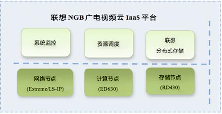
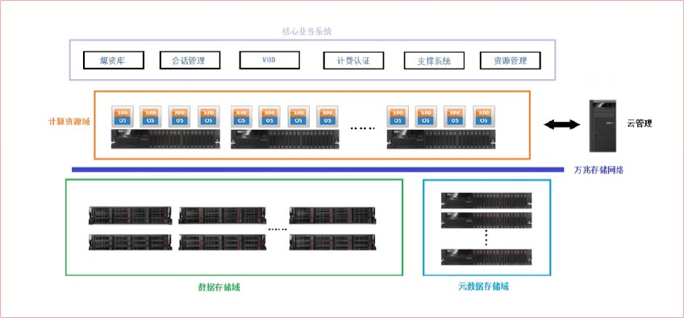

下一代广播电视网（NGB）项目需求
本项目的用户需求如下：
指标要求：
- 存储：满足1.5万小时的10Mbps码率的高清视频资料存储容量；
- 带宽：满足10万并发用户10Mbps码率的高清视频点播。
系统要求：
- 高扩展性：线性的，根据并发用户数动态扩展应用服务器，
根据存储视频资料要求动态扩展存储空间；
- 高可靠性：不停机服务，及时切出故障节点和自动恢复；
- 易维护性：无需人工干预，系统自动侦测错误，配置逻辑清晰。

解决方案laaS平台构成
联想NGB视频系统采用云计算技术，在IaaS层为应用系统构建弹性、可靠和高性能的基础平台，使得用户可根据业务状态动态分配计算资源和存储资源。
联想NGB 视频云IaaS平台系统分成网络节点、计算节点和存储节点。网络节点采用冗余网络，计算节点采用虚拟化和负载均衡集群，存储节点采用分布式集群存储模式，共同构建NGB云平台基础环境。
系统架构：

计算节点：
- 采用联想ThinkServer RD630服务器：配置双
CPU，128G内存，4口万兆SFP+端口；
- 采用联想LS-IP 4500万兆高性能负载均衡器：
背板带宽256Gbps，可管理数千个服务器/虚
拟机节点；
- 采用VMware虚拟化系统：可按需为应用配置
计算资源，故障自动迁移。
存储节点：
- 采用联想ThinkServer RD430
服务器：配置高性能的SAS盘
以及SSD固态盘；
- 采用联想分布式文件集群存储
系统：超过100PB的存储能力
100Gbps的IO吞吐能力，按需
增加存储容量。
网络节点：
- 采用Extreme万兆核心交换机：背板带宽
960Gbps，48口1G/10G SFP+端口，支
持IPV4/IPv6；
- 冗余网络：支持级联/堆叠，无单点故障，
按需扩展；
- 分为计算子网络和存储子网络：前后分离，
独立管理，互不影响。
解决方案laaS平台特点
联想NGB视频系统IaaS平台有以下特点：
高可用性
冗余计算节点
- 物理节点：联想IaaS虚拟化管理平台，自动监测所有物理节点的健康状态，对于故障的物理节点，根据设定的策略，自动地将其上的所有
虚拟节点迁移到其他物理节点中，故障修复后按照策略迁回；
- 虚拟节点：自动监测虚拟节点的工作状态，对于故障的虚拟节点，根据设定的策略，自动地将迁移到其他物理节点中，故障修复后按照策
略迁回；
- SDK API：由监控系统监测应用的健康状态，可根据联想IaaS虚拟化管理平台提供的关闭和迁移虚机的API函数，根据策略将其重启或者
重启迁移到其他物理机上继续运行。
冗余存储节点
- 文件管理：联想IaaS文件管理平台可按照用户的冗余策略，将文件（切片），在不同的物理设备上保存多份，确保设备或者硬盘故障时，
保存文件的安全性。
冗余网络
- 采用Extreme 670交换机以级联/堆叠/星型组网方式，交换机之间直接互相冗余，确保无单点故障；
- 采用联想 LS-IP 4500负载均衡器，部署成双机模式，自动监测和切换，确保入站访问访问安全；
冗余链路
- 链路管理：所有服务器硬件、负载均衡硬件的网口均支持链路冗余技术，配合冗余网络，使得接入安全可靠。
冗余电源
- 所有设备均支持热插播冗余电源，接入两路供电，确保云平台的整体安全。
可扩展性
服务节点
- 联想IaaS虚机管理系统可根据需求（CPU和内存）配置虚机，最多可在单台服务器上支持128个开启状态的虚拟机。
存储节点
- 联想IaaS分布式集群存储系统单卷支持300PB，支持动态添加元数据服务器和存储服务器硬件，服务器和硬盘不受型号和容量的限制；
- 可支持4096个的存储设备和1024台设备的并发访问。
高性能
- 计算服务器：采用Intel Xeon E5 8核处理器，内存高达128G，配置4口万兆SFP+网卡以及2口千兆网口；
- 存储服务器：采用SSD固态盘做基础系统存储介质，每个元数据系统可并发随机打开2万个文件，存储服务器采用SAS盘，提高磁盘I/O
能力；
- 分布式存储系统：支持2000亿以上文件快速检索，I/O能力随扩充能力线性增长，可达200Gbps。
易管理性
- 自动化管理：各系统可以定义故障处理机制，自动处理故障点；
- SDK API：为第三方系统提供丰富的接口函数，便于集成管理。